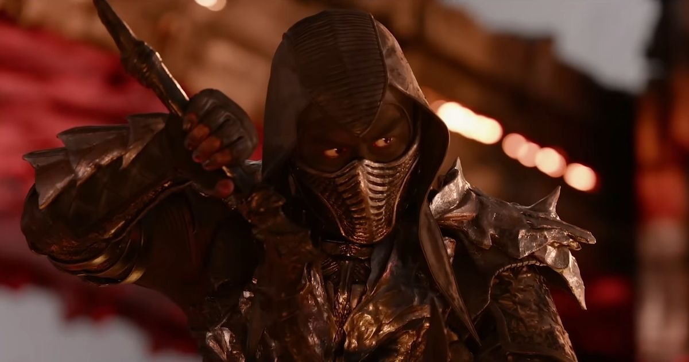
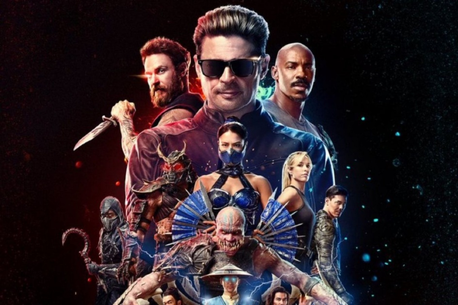
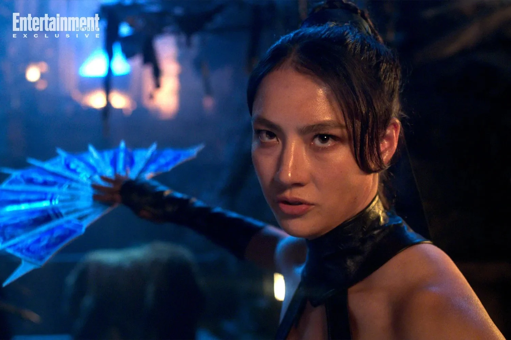
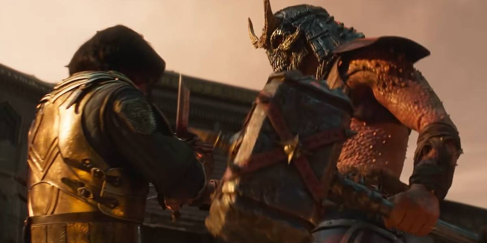
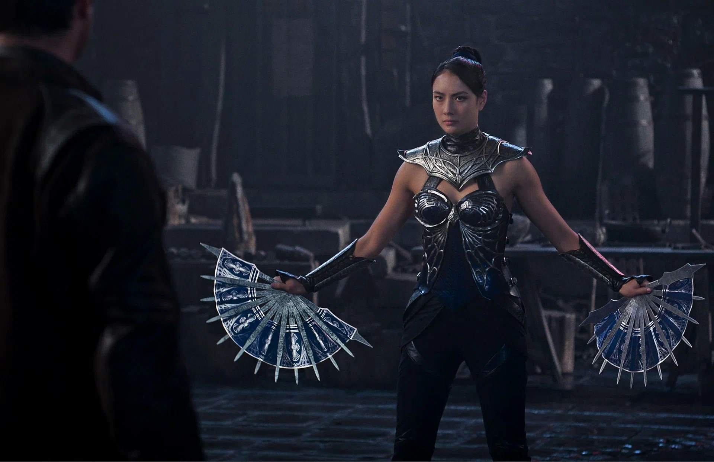
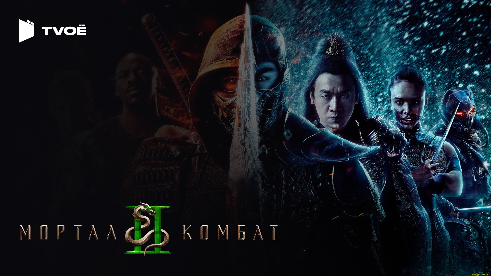
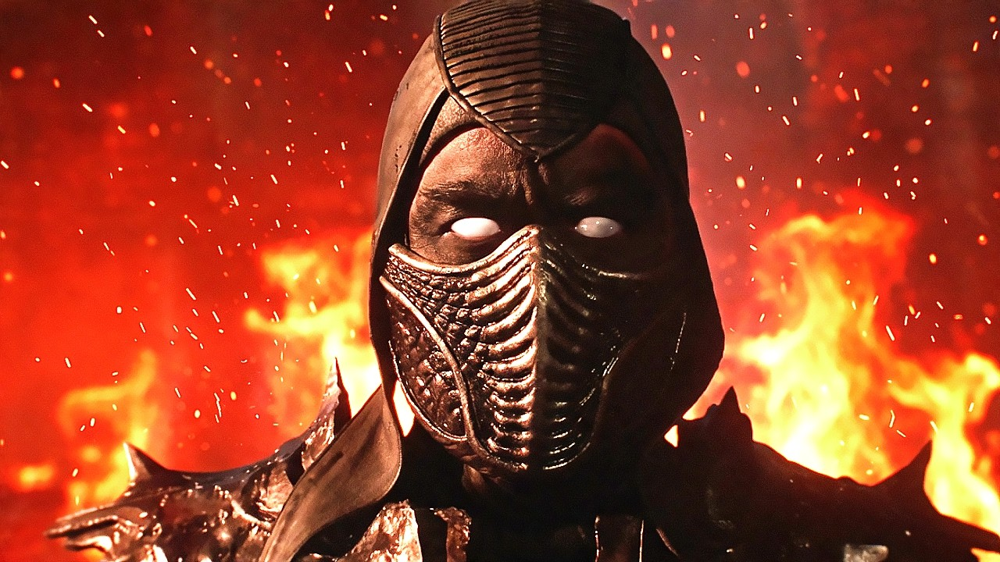
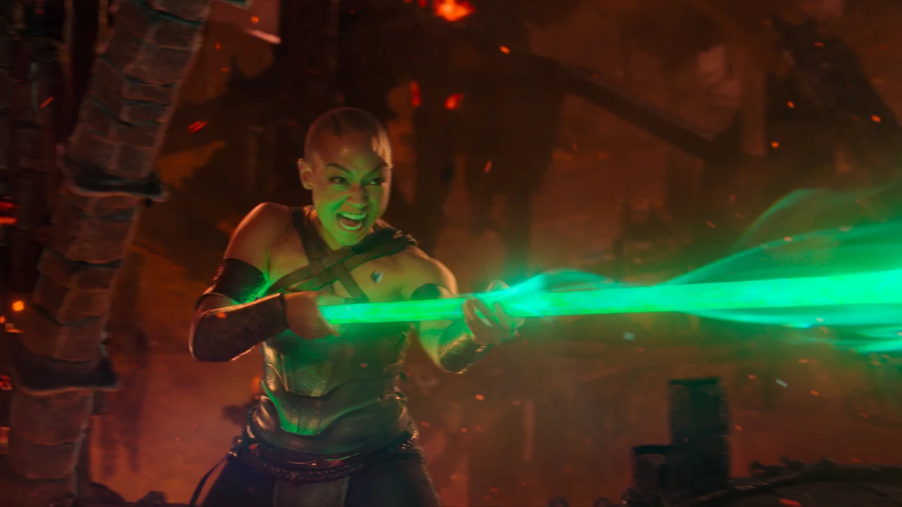

8 мая в мировой прокат выйдет «Мортал Комбат 2» — долгожданный сиквел фэнтезийного боевика по мотивам популярной игровой франшизы. Рассказываем все, что нам известно о продолжении и его центральном персонаже — голливудском актере Джонни Кейдже, которого сыграл Карл Урбан, звезда «Пацанов». Итак, шоу начинается!

Сиквел «Мортал Комбат» наконец расскажет о том, чего, по мнению многих фанатов, не хватало первому фильму, — о десятом и решающем турнире. Именно на нем лучшие воины Земного царства сойдутся в смертельных поединках с чемпионами Внешнего мира.

8 мая в мировой прокат выйдет «Мортал Комбат 2» — долгожданный сиквел фэнтезийного боевика по мотивам популярной игровой франшизы. Рассказываем все, что нам известно о продолжении и его центральном персонаже — голливудском актере Джонни Кейдже, которого сыграл Карл Урбан, звезда «Пацанов».

Режиссерское кресло продолжения вновь занял австралиец Саймон Маккуойд. Первый «Мортал Комбат» стал его дебютом в полнометражном кино, до этого постановщик в основном снимал рекламные ролики для таких брендов, как Apple, HBO, Netflix, Volkswagen, Mercedes и Samsung.

А вот команду сценаристов студия заменила полностью. Если за сценарий оригинала отвечали Дэйв Каллахэм («Неудержимые», «Чудо-женщина: 1984», «Человек-паук: Паутина вселенных») и Грег Руссо, то вторую часть написал Джереми Слейтер, шоураннер «Лунного рыцаря» и автор «Годзилла и Конг: Новая империя».

Изначально «Мортал Комбат 2» должен был выйти в прокат еще в октябре 2025 года, но затем его премьеру перенесли на 8 мая 2026 года.

И без того немаленький состав уцелевших (и воскрешенных) персонажей первого «Мортал Комбат» пополнился несколькими новыми лицами.

Главный из новичков — Джонни Кейдж в исполнении Карла Урбана, вокруг которого строится большая часть маркетинговой кампании сиквела.

За камеру вместо австралийца Джермейна МакМикинга встал более известный в Голливуде оператор Стивен Ф. Уиндон, снявший почти все «Форсажи».
Первый «Мортал Комбат» не стал кассовым хитом в кинотеатрах (при бюджете в 55 млн долларов картина Саймона Маккуойда собрала по миру лишь 85 млн долларов), но при этом умудрился превзойти ожидания. Дело в том, что, как и в случае с другими релизами студии 2021 года, стриминговая премьера фильма состоялась в один день с кинотеатральной. Благодаря этому экшен стал самым просматриваемым новым релизом на HBO Max. Студия довольно оперативно запустила в производство сиквел, причем авторы пообещали провести работу над ошибками и учесть критику поклонников франшизы.
«Ничего не могу сказать о самом сюжете, но могу подтвердить, что мы определенно извлекли уроки. Мы разобрали, что в прошлый раз зашло фанатам, а что — нет, и постарались сделать невероятно захватывающее, интересное и непредсказуемое кино» -
Джереми Слейтер
Студии New Line Cinema и Warner Bros. Discovery явно не сомневаются в успехе сиквела. Сценарист Слейтер еще в октябре проговорился на New York Comic Con, что уже работает над сценарием триквела. «Наши друзья в New Line Cinema и Warner Bros. настолько довольны увиденным и настолько уверены в огромной армии поклонников, которые ждут фильм, что уже наняли меня для написания следующей части», — объявил Слейтер.